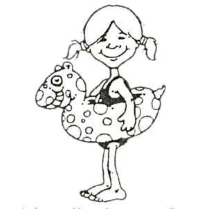

Hogyan segítette valaki a hajtások növekedését?
Egy Song tartománybeli férfi úgy vélte, hogy az ő földjén lassan növekednek a hajtások, ezért félig kihúzkodta valamennyit a földből, majd hazament.
– Ma aztán jól elfáradtam – mondta a családjának. – Segítettem a hajtásoknak, hogy gyorsabban nőjenek.
A fia kirohant a földjükre. Csak egy pillantást kellett vetnie az ültetvényre, látta, oda az egész.
A legtöbb ember azt szeretné, ha a fiatal hajtások gyorsabban nőnének. Némelyek úgy vélik, hiábavaló minden erőlködés, ezért még a gazt se gyomlálják ki közülük, mások meg azzal akarják gyorsítani a sarjak növekedését, hogy kirángatják őket a földből. Az utóbbi a semmittevésnél is haszontalanabb.
Mencius
Régi kínai mondás: “Bármilyen nagy hálót feszítesz is ki, a madárka egyetlen pici lyukban akad fenn.”
A hajótulajdonos ötlete
Találkoztam egy emberrel, aki gyalog igyekezett Lüliangba. Meglátott egy hajót, és ötven pénzt ajánlott a hajótulajdonosnak, ha elviszi Pengmenig.
– A szokott díjszabás szerint – mondta a hajótulajdonos –, az utas poggyász nélkül száz pénzt fizet az útért. Mivel én ötvenet fizetek annak, aki a hajót vontatja, elviszlek ötvenért, ha vállalod, hogy te vontatod a hajót.
Ai Zi töredékekből
A könyörületes férfi
A könyörületes férfi teknősbékát fogott. Meg akarta főzni levesnek, de mivel nem akart a teknősbéka gyilkosa lenni, fazékban vizet forralt, pálcát fektetett keresztül a fazékon, és azt mondta a teknősnek:
– Ha átmész a pálcán a fazék fölött, szabadon engedlek.
A teknős jól tudta, mi a férfi szándéka, mivel azonban nem akart meghalni, összeszedte minden erejét, és megkísérelte a lehetetlent.
– Nagyszerűen sikerült! – mondta az ember. – Próbáld meg újra!
Cheng Shi
Az ember, aki nem vallotta be a tévedését
Chu tartományban élt egy ember, aki nem tudta, hol terem a gyömbér. Azt hitte, fán terem.
Valaki megmondta neki: a gyömbér a földben terem.
Nem akarta elhinni.
– Felteszem a szamaramat fogadásra. Kérdezzünk meg tíz embert, s ha valamennyi azt mondja, hogy a gyömbér földben terem, tiéd a szamaram.
Megkérdezték a tíz embert, valamennyien azt mondták, a gyömbér földben terem.
– Vidd hát a szamarat! – mondta a kárvallott. – De hiába nyertél, én akkor is tudom, hogy a gyömbér fán terem!
Xue Tao történetei
Az ujjadat kérem
A szegény ember találkozott régi barátjával, aki halála után istenséggé változott. Végighallgatta a szegény ember panaszait a nyomorról, amelyben életét tengeti, majd ujjával az út szélén heverő téglára mutatott. A tégla nyomban aranyrúddá változott. Megajándékozta vele a szegény embert, ám régi barátja nem lett elégedett, ezért adott neki egy nagy aranyoroszlánt is. A másik még mindig elégedetlen volt.
– Hát mit kérsz még? – kérdezte az istenséggé vált barát.
– Az ujjadat – hangzott a válasz.
Xiao Fu
A meséket Szekendy Alajos válogatta a KLASSZIKUS KÍNAI MESÉK c. könyvből. Fordította Striker Judit. A fordítás a Foreign Languages Press, Bejing, China, 1981-ben kiadott Chinese Ancient Fables c. angol nyelvű kötete alapján készült. Magyar nyelven a NÓTÁRIUS KÖNYVKIADÓI GMK jelentette meg 1991-ben.